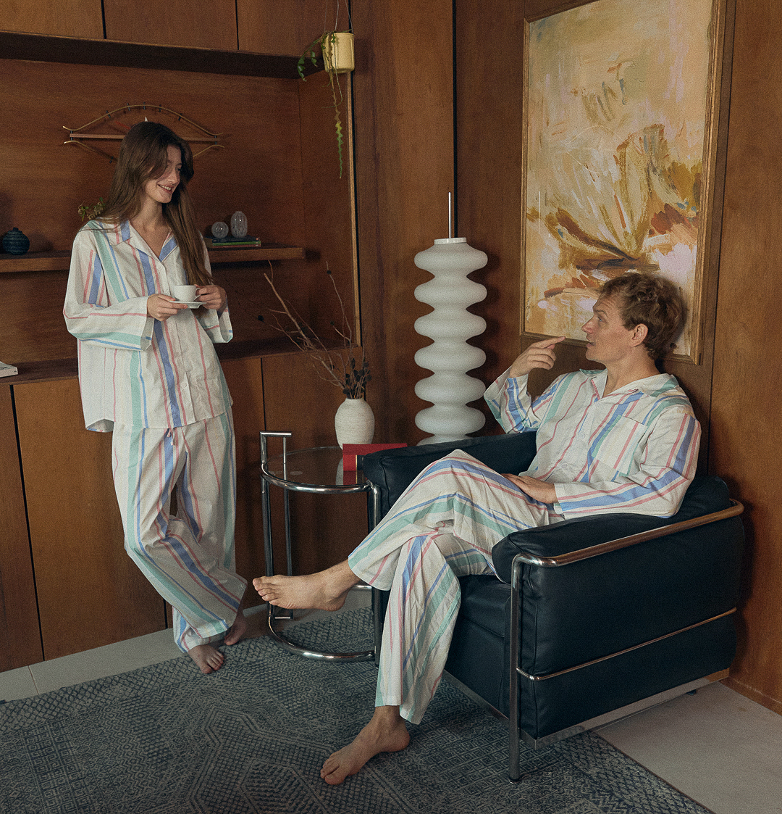

FOUNDER'S STORY
가격표 앞의 아내를 보고,
직접 만들기로 했습니다.
원단을 다룬 14년의 경험 끝에,
고르는 순간의 설렘이 오래 남는
잠옷을 만들기 시작했습니다.

12만 원의 로브 앞에서.
백화점 팝업 행사장에서 한 홈웨어 브랜드를 본 적이 있어요. 얇은 로브 하나가 12만 원이 넘었는데, 원단 일을 14년간 해온 제 눈에는 제가 직접 수급할 수 있는 소재였습니다.
실제 원가에 비해 가격이 지나치게 높다는 걸 알고 있는데도, 아내는 가격표 앞에서 살까 말까 고민하고 있었어요. 그 모습을 보면서 생각했습니다.
홈웨어의 본질을 지키면서도, 예쁜 옷에서 시작된 좋은 기분이 다음 날까지 이어지는 제품을 내가 직접 만들어보자고요. 그때 처음으로 “아, 나도 해봐야겠다”는 마음이 들었습니다.

현장에서는 사랑받았지만,
그다음이 없었습니다.
원단 B2B 사업만 해오다가 처음 B2C 브랜드를 시작했어요. 한 번 만져보고 입어보면 만족할 거라는 확신은 있었지만, 그 한 번의 경험까지 고객을 데려오는 일이 가장 어려웠습니다.
코엑스 무역센터점과 천호를 비롯한 백화점 팝업에서는 신생 브랜드치고 매출이 굉장히 높다는 이야기를 들었습니다. 제품을 만져보고 구매하는 고객들의 표정도 대부분 밝았고요.
하지만 행사가 끝나면 그 관계도 함께 끝났습니다. 직원들과 손님을 응대하느라 지금까지 고객 연락처를 한 건도 남기지 못했어요. 현장의 좋은 반응을 온라인 관계로 이어갈 경험과 시스템이 없었습니다.
“제품을 파는 것과
브랜드의 고객을 만드는 것은
전혀 다른 일이었습니다.”
예쁘다는 이유만으로는
출시하지 않습니다.
저는 처음 봤을 때의 설렘이 몇 번을 입은 뒤에도 만족으로 남는지 확인합니다. 디자인과 소재만 보는 것이 아니라, 실제로 입고 있는 시간과 세탁 후의 상태까지 함께 봅니다.
예쁨과 편안함을 서로 반대되는 가치라고 생각하지 않아요. 화사함은 우리가 고객에게 남기고 싶은 감정이고, 편안함은 그 감정이 오래 이어지기 위해 반드시 갖춰야 할 기본 조건입니다.
원가를 맞추기 위해 잠옷의 본질을 희생하지 않는 것. 그것만큼은 타협하지 않습니다.

다시 찾아온
한 사람.
팝업에서 제품을 구매한 30대 초반의 고객이 있었어요. 다시 사고 싶었지만 그 제품은 온라인에 올라와 있지 않았고, 고객은 직접 DM으로 문의를 주셨습니다.
거주지에서 팝업 행사장까지 거리가 꽤 있었는데도 다시 찾아오셨어요. 본인의 잠옷뿐 아니라 친구와 부모님 것까지, 다섯 벌이 넘는 제품을 구매해 가셨습니다.
그분을 보며 다시 확인했어요. 제품은 분명 좋다는 것, 다만 아직 잠재 고객에게 닿는 방법을 충분히 찾지 못했다는 것을요.
지금까지의 장면들.
- 14년 동안원단의 기준을 배우다
B2B 원단 사업에서 소재와 원가, 제품이 만들어지는 과정을 익혔습니다.
- 시작의 장면가격표 앞에서 결심하다
백화점 팝업의 12만 원짜리 로브와 고민하는 아내를 보고 직접 만들기로 했습니다.
- 첫 팝업들제품의 가능성을 확인하다
코엑스 무역센터점과 천호 등에서 고객의 밝은 표정과 높은 현장 반응을 만났습니다.
- 다시 찾아온 고객제품에 대한 확신을 얻다
먼 거리를 다시 찾아와 가족과 친구의 잠옷까지 고른 고객을 통해 가능성을 확인했습니다.
- 지금관계를 이어가는 방법을 배우다
좋은 제품을 넘어, 고객과 오래 만나는 브랜드가 되기 위한 방법을 만들고 있습니다.